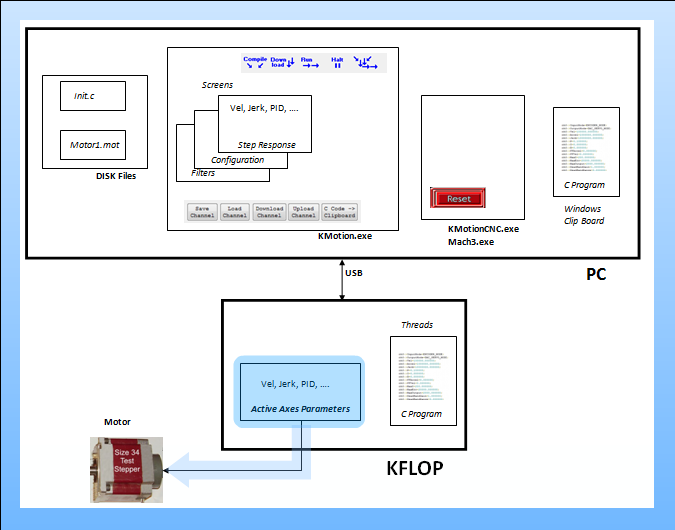
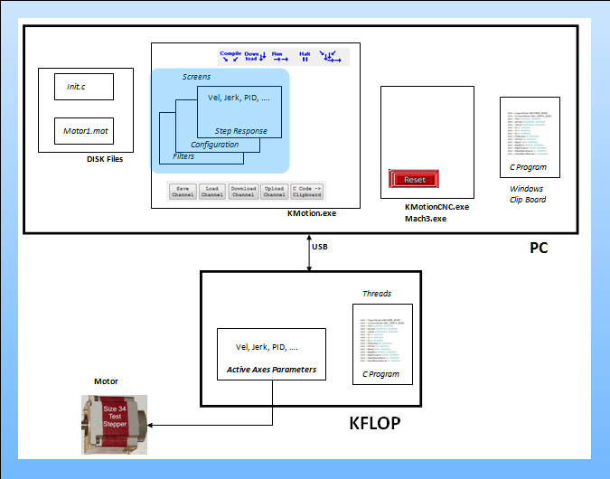
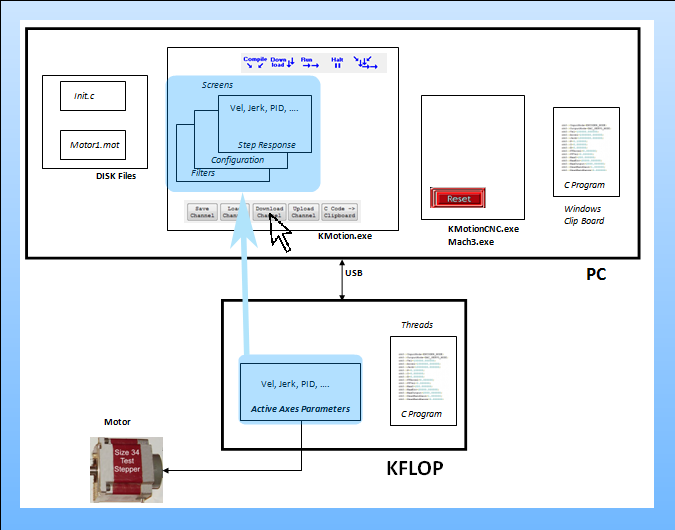
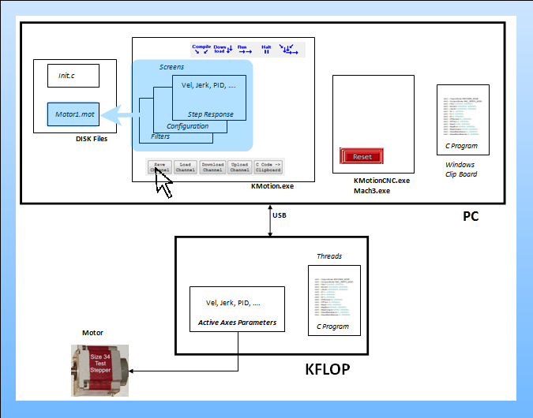
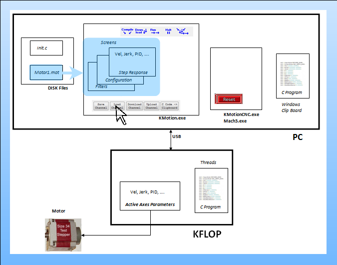
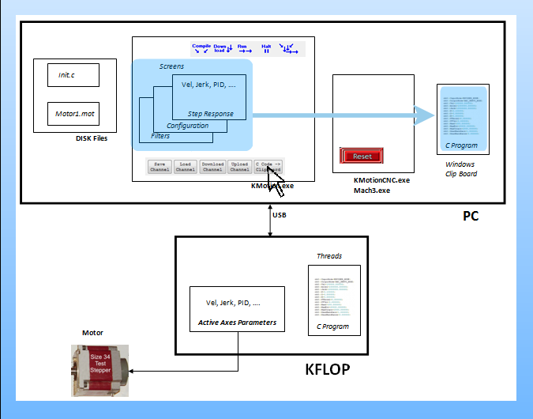
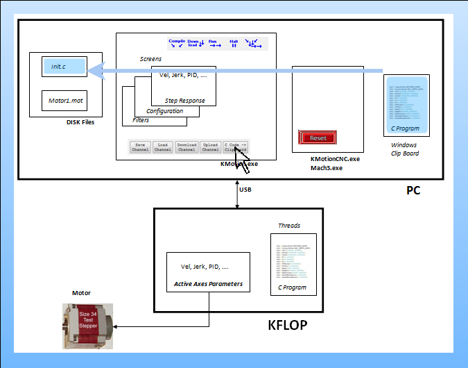
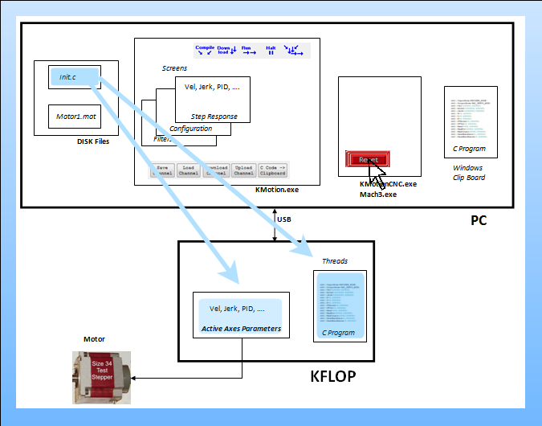

KFLOP/Kogna Axis Configuration and Parameters
The following slides explain the relationships between the various methods of changing KFLOP/Kogna Axis Configuration and Parameter Settings.
There is one set of currently active settings within KFLOP/Kogna.
These settings can be altered in several different ways such as downloading the KMotion.exe Screens or by Executing a C Program.
The settings shown on the KMotion.exe Screens do not necessarily reflect the current settings in KFLOP/Kogna.
1. KFLOP/Kogna contains one set of Active Axis Parameters and Settings. These are used for any axis operations:

2. When the KMotion.exe Configuration and Tuning Program is running, the Configuration, Step Response, and Filter Screens have cells for all of the Axis Parameters:

3. Pushing the "Download Channel" Button downloads the Screen settings to KFLOP/Kogna and enables the axis.:
4. Pushing the "Upload Channel" Button uploads the Active Parameters from KFLOP/Kogna to the KMotion Screen Cells:

5. The KMotion.exe Screen settings for an axis can also be saved to a Disk file by pushing the "Save Channel" Button:

6. Or a Disk file may be loading into the KMotion Screen Cells for an axis by clicking the "Load Channel" Button:

7. The Screen settings can also be converted to C Language Program Code to be later executed in KFLOP/Kogna. Push the "C Code -> Clipboard" Button to place the code into the Windows Clipboard:

8. The C Code can then be pasted into an Initialization Program with the other axes:

9. KMotionCNC or Mach3 can then easily execute the Init.c program to set the Active Parameters in KFLOP/Kogna:
